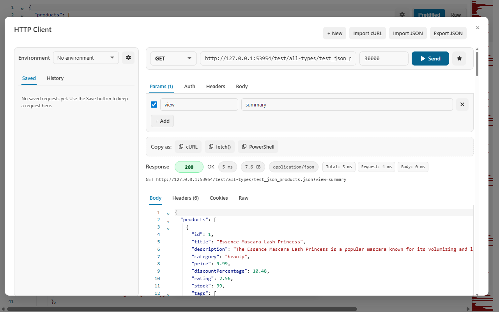
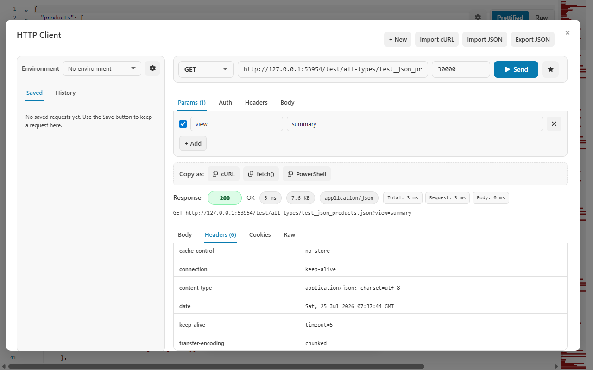

Build or import
Choose the method and URL, add query params, auth, headers, and a body, or import an existing cURL command.
Compose a request with params, authorization, headers, and several body modes; import cURL; use local environments; save useful requests; and inspect response body, headers, cookies, raw output, status, size, and timing in one workspace.

Choose the method and URL, add query params, auth, headers, and a body, or import an existing cURL command.
Set a timeout, inspect the resolved URL and environment values, then press Send. Network activity begins only after that action.
Review the body, headers, cookies, and raw response; save the request or copy it as cURL, fetch(), or PowerShell.
The client keeps structured controls and copyable code aligned so you can move between interactive debugging and a script.
Environment variables can replace stable values while the resolved URL stays visible before sending.
Method: GET
URL: {{baseUrl}}/v1/products
Params:
view = summary
Headers:
Accept = application/json
Timeout:
30000 msGenerated snippets reflect the active method, resolved URL, headers, auth, and body choices.
const response = await fetch(
"https://api.example.com/v1/products?view=summary",
{
method: "GET",
headers: {
Accept: "application/json"
}
}
);
const data = await response.json();Status, content type, response headers, cookies, timing, and the raw response can explain behavior that a formatted JSON body cannot. Compare these views when investigating caching, authentication, redirects, content negotiation, compressed responses, or a server that returns useful diagnostics outside the body.

The client contacts the URL displayed in the composer only after you press Send. The destination service receives the request directly.
Saved requests, environments, and replay history are stored locally. Protect the browser profile if those values contain secrets.
Replay history omits request bodies, credential headers, URL credentials, and sensitive query parameters.
Use environment values carefully, avoid saving credentials you do not need, and review the target service’s policy before sending sensitive data.
No. The target server’s CORS policy still determines whether the response is exposed to the browser. CodePrettify reports likely CORS failures with targeted guidance.
Only when you press Send. Editing the URL, importing cURL, changing an environment, or copying a snippet does not send the request.
No. Protect your browser or Windows profile and avoid persisting sensitive values unnecessarily.
Yes. Copy the active request as cURL, JavaScript fetch(), or PowerShell and review the generated command before running it.
Compose the call, inspect more than the body, and copy a reproducible request when the investigation is complete.